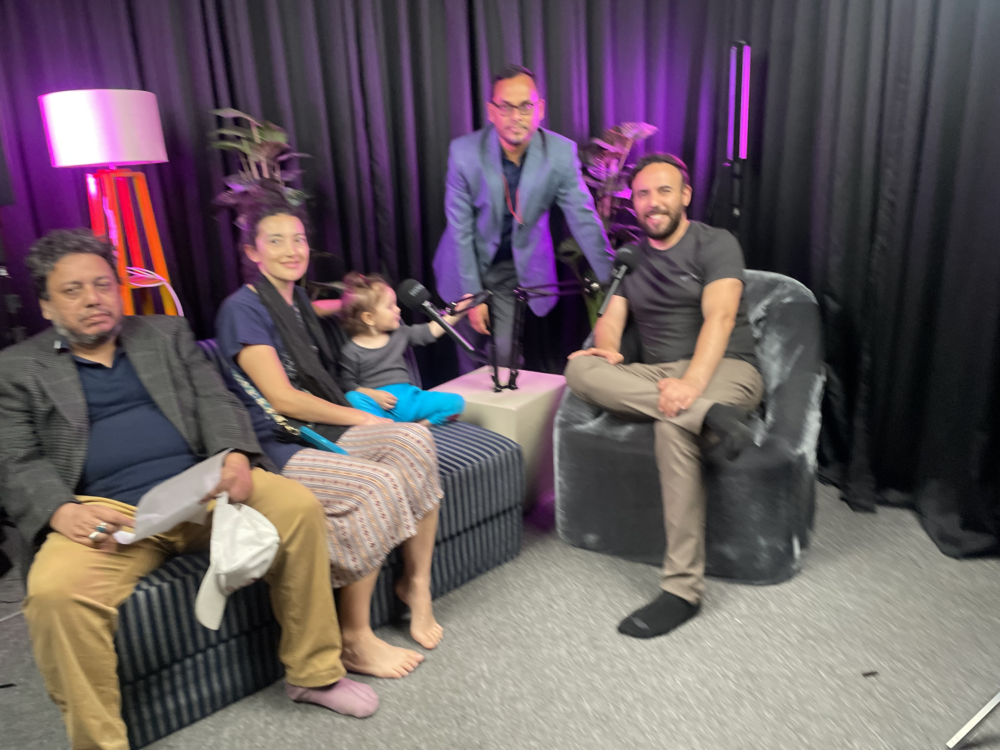
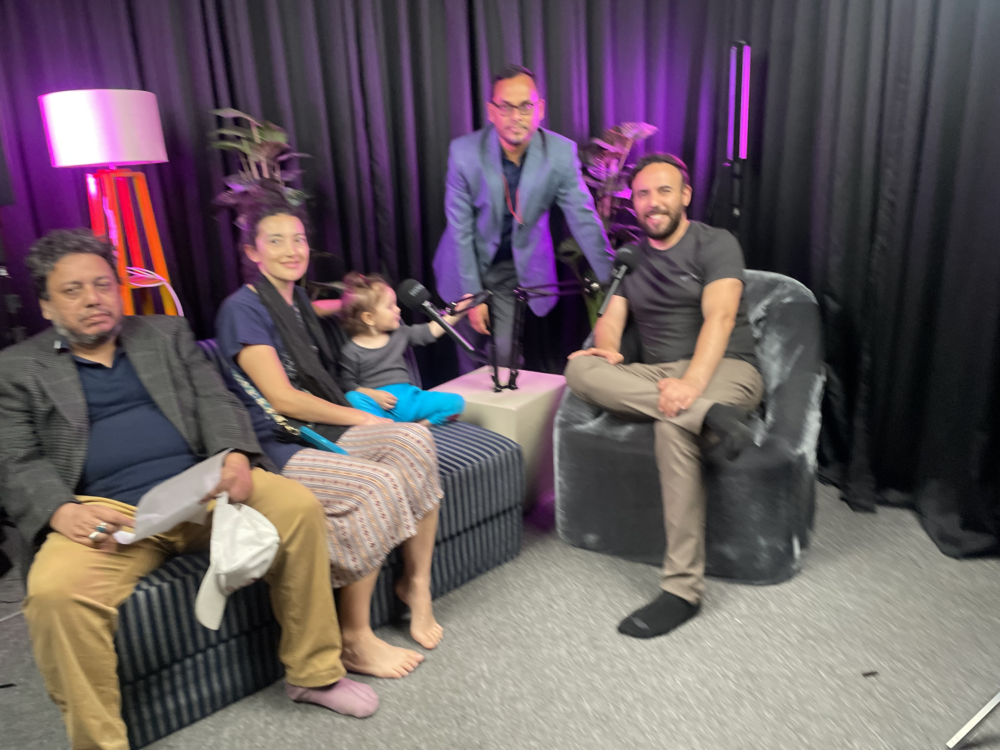

Teaching & Outreach
I teach geochemical methods and climate applications with an emphasis on transparent analysis, reproducible workflows, and safe, hands-on laboratory practice. I enjoy translating technical concepts into approachable exercises for students at different levels.
Python for Geochemists; LA-ICP-MS QA/QC; U–Th data reduction and reporting.
Coral archives & sea-level reconstructions (Princeton; UQ).
Science communication and dialogues connecting climate, oceans, and society.
Volunteer Teaching in Bangladesh
I volunteered with students and early-career researchers in Bangladesh, co-leading short courses on field sampling, carbonate geochemistry, and data analysis. We covered practical lab safety, sample prep, and open workflows in Python for organizing, visualizing, and quality-checking geochemical time series. The goal was to build confidence with real datasets and to connect local environmental questions with methods that are transparent and repeatable.
- Hands-on methods: sampling, QA/QC, and simple calibration checks
- Data skills: tidy data, plotting, seasonal cycles & anomaly detection
- Applications: coastal water quality, carbonate chemistry, coral proxies
 
